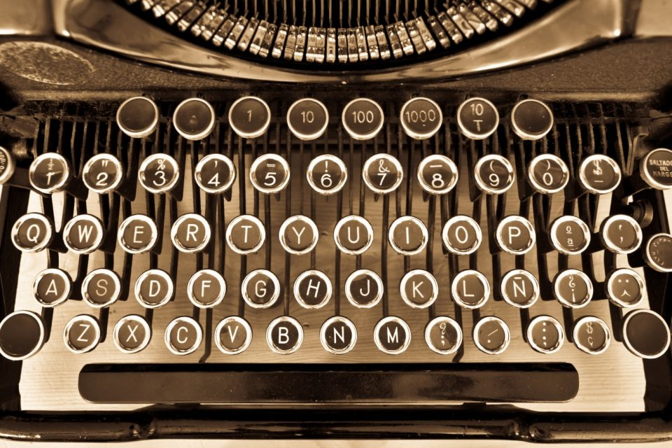
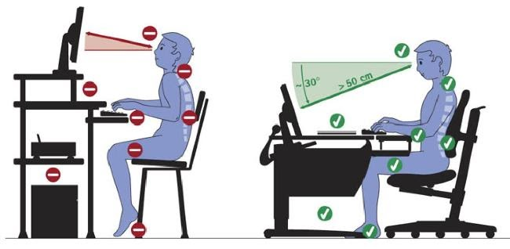
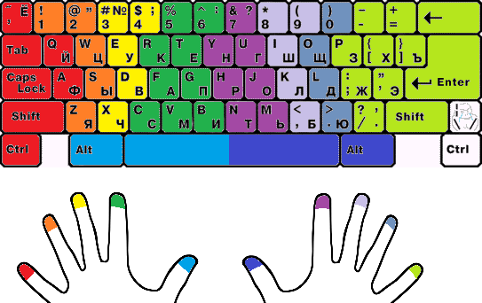
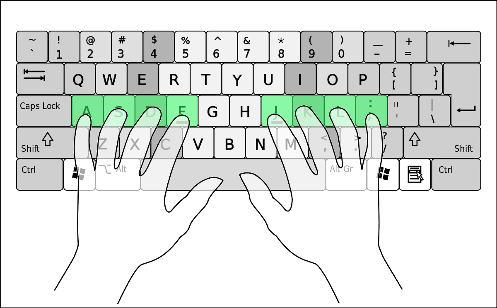

Метод слепой печати: зачем нужен и как научиться
Эта статья состоит из 4200 символов. Если бы вы печатали вслепую, то набрали бы её
в среднем за 15 минут.
Хотите узнать, как научиться слепой печати на клавиатуре, — читайте статью до конца.
1888 год: судебный стенографист Франк Эдгар Макгуррин решил поучаствовать в соревнованиях по набору текста и доказать, что придуманный им слепой метод ничем не хуже популярного тогда зрячего восьмипальцевого. Сказано — сделано. Макгуррин выиграл, получил приз в 500 долларов и сделал популярным свой метод.
Что такое десятипальцевый метод набора
Слепой метод печати
(или по-другому машинопись) — способ ввода текста, при котором человек не смотрит на клавиатуру и использует все 10 пальцев. При этом развивается мышечная, а не зрительная память.
Расположение клавиш на современных клавиатурах стандартизовано: так называемая раскладка QWERTY. Её изобрёл Кристофер Шоулз в 1868 году, чтобы клавиши с наиболее частыми буквосочетаниями размещались далеко и рычаги печатной машинки не цеплялись друг за друга. Именно на машинке с такой раскладкой победил Макгуррин.
Преимущества слепой десятипальцевой печати
- Увеличится скорость набора текста, и вы сможете первыми отвечать преподавателю в чате и гораздо быстрее находить информацию в Сети. В зависимости от тренированности, можно печатать от 200 до 400 символов в минуту, что значительно снижает трудоёмкость любого задания и сокращает затрачиваемое время.
- Вы будете делать меньше ошибок и опечаток в текстах при наборе вслепую. Сосредотачиваясь на словах, а не на клавишах, повышается концентрация внимания и аккуратность. Чем меньше ошибок, тем меньше раздражения.
- Вы сможете печатать методом слепого набора даже в плохо освещённой комнате и будете меньше уставать от работы за компьютером. Не нужно переводить взгляд с клавиатуры на дисплей и обратно. Это бережёт зрение, поддерживает мышечный тонус шеи и осанку, а использование всех 10 пальцев благотворно влияет на суставы.
В США слепой печатью владеет 95% людей, так как обучать этому начинают ещё в начальной школе. В Западной Европе обучение десятипальцевому методу набора текста также входит в образовательную программу.
Как научиться методу слепой печати
Шаг 1. Примите правильную позу
Сидеть необходимо прямо, не нагибаясь и не наклоняя голову. Угол между позвоночником и бедром и между бедром и голенью должен составлять 90 градусов. Взгляд должен быть направлен вперёд, в центр экрана монитора. Расстояние от глаз до экрана монитора — от 40 до 70 сантиметров. Правильная поза очень важна для здоровья и способствует быстрому обучению печати слепым методом.
Шаг 2. Изучите клавиатуру
За каждым пальцем при обучении слепому методу печати закреплены свои клавиши, которые должны нажиматься именно им.
Исходное положение левой руки: мизинец на клавише «Ф», безымянный на «Ы», средний на «В», указательный на «А».
Исходное положение правой руки: мизинец на «Ж», безымянный на «Д», средний на «Л», указательный на «О».
Большие пальцы обеих рук располагаются на пробеле.
«ФЫВА» и «ОЛДЖ» — это так называемые домашние клавиши. Чтобы быстро располагать руки в стартовую позицию, на клавишах «А» и «О» делают небольшие выступы.
Шаг 3. Тренируйтесь
Заниматься изучением десятипальцевого метода набора вслепую на компьютере желательно два-три раза в день.
Для начала попробуйте закрыть глаза и, расположив пальцы на домашней строке, напечатать свою фамилию. Перемещайте только пальцы. Взгляд должен быть направлен не на клавиатуру, а на экран. Продолжайте практиковаться в печатании слепым методом, пока не получится без ошибок.
Затем можно перепечатать текст из книги или позаниматься на специальном тренажёре. В интернете вы найдёте множеством платных и бесплатных программ для тренировки десятипальцевого набора текста. Вот лишь несколько из них:
Советы новичкам по обучению печати вслепую
- Обязательно используйте только правильные пальцы для набора каждой из букв и всегда возвращайте пальцы в исходную позицию «ФЫВА — ОЛДЖ» — это основа метода слепого набора.
- Старайтесь не смотреть на клавиатуру. Если необходимо, прикройте её чем-нибудь. Всегда сканируйте текст на одно-два слова вперёд.
- Уделите особое внимание развитию безымянных пальцев и мизинцев обеих рук — их моторика значительно хуже остальных. Они не меньше остальных пальцев участвуют в наборе текста на клавиатуре слепым методом.
- На первых этапах сфокусируйтесь на качестве, а не на скорости. Старайтесь печатать без ошибок, скорость со временем придёт сама. Когда потренируетесь, сыграйте в игру: завяжите глаза и напишите произвольный текст вслепую, а потом проверьте.
- Если во время тренировки метода десятипальцевой печати начинаете злиться, сделайте паузу, отдохните.